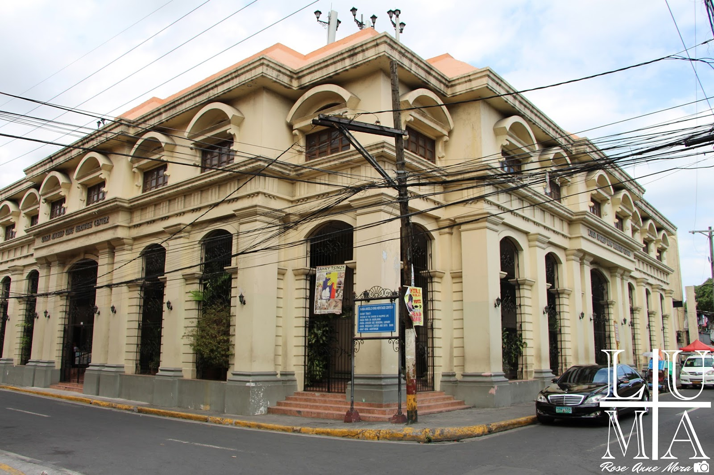

BAHAY TSINOY MUSEUM
see on map
Bahay Tsinoy Museum is a museum located in Manila, Philippines, that showcases the history and culture of the Chinese community in the Philippines. It was established in 1999 and is housed in a restored building in the historic district of Intramuros. The museum's exhibits include artifacts, photos, and interactive displays that tell the story of the Chinese in the Philippines. It highlights their contributions to Philippine history and culture, such as their role in trade, medicine, and art. The museum also showcases the traditions, beliefs, and way of life of the Chinese in the Philippines, providing visitors with an educational and immersive experience. One of the notable exhibits in the museum is the Gallery of the Chinese in the Philippines, which showcases the history of Chinese migration to the Philippines, from the early settlements in the pre-Spanish era to the present-day. The gallery also highlights the Chinese-Filipino relations and their role in shaping the country's history. Aside from the exhibits, the museum also offers cultural activities and workshops, such as calligraphy and traditional Chinese paper cutting, providing visitors with a hands-on experience of Chinese culture. Overall, Bahay Tsinoy Museum is an important tourist spot in Manila that offers an insight into the rich and diverse history and culture of the Chinese community in the Philippines. It is an excellent destination for those interested in learning about the country's cultural heritage and the role of the Chinese in shaping its history.

Bahay Tsinoy Museum is a popular tourist spot in Manila that showcases the rich history and culture of the Chinese community in the Philippines. Here are some reasons why it is worth visiting:
Preservation of Chinese-Filipino History: The museum preserves and presents the story of the Chinese in the Philippines, highlighting their contributions to the country's history and culture. The exhibits showcase the traditions, beliefs, and way of life of the Chinese in the Philippines, making it an educational experience for visitors.
Cultural Artifacts: The museum displays a vast collection of Chinese artifacts, including pottery, porcelain, textiles, and traditional Chinese clothing, which are a testament to the country's cultural heritage.
Interactive Exhibits: The museum has interactive exhibits that allow visitors to learn more about Chinese culture and history. Visitors can also take part in activities like calligraphy and traditional Chinese paper cutting.
Location: Bahay Tsinoy Museum is located in the heart of Manila's historic district, making it easily accessible for tourists. It is situated within the Intramuros walls, a significant historical landmark in Manila.
Guided Tours: Guided tours are available for visitors who want a more in-depth understanding of the exhibits and the Chinese-Filipino history.
In summary, Bahay Tsinoy Museum is an excellent tourist spot in Manila that offers an educational and immersive experience for visitors. The museum's preservation of Chinese-Filipino history, cultural artifacts, interactive exhibits, location, and guided tours make it a must-visit destination for those interested in the Philippines' diverse culture and history.